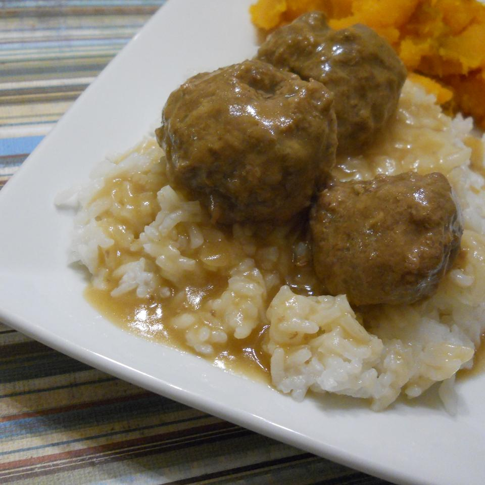

Meatballs

Description
Mum's Swedish Meatballs
From allrecipes
Ingredients
- 3 tablespoons butter
- 1 onion, chopped
- 2 slices bread, cubed
- 1 (12 fluid ounce) can evaporated milk, divided
Steps
- Melt butter in a skillet over medium heat; cook and stir onion in the melted butter until tender, 5 to 10 minutes.
- Place bread cubes in a bowl; pour 1/2 cup evaporated milk over bread cubes. Set aside until bread cubes absorb milk.
- Mix ground beef, ground pork, cooked onion, bread cube mixture, eggs, Worcestershire sauce, parsley, nutmeg, allspice, salt, lemon pepper, and ground black pepper together in a large bowl. Form mixture into golf ball-sized meatballs.
- Heat olive oil in the same skillet used for onion over medium-high heat; cook meatballs in the hot oil, turning with tongs, until all sides are browned, 10 to 15 minutes. Pour in beef stock and simmer until meatballs are cooked through, 15 to 20 minutes. Transfer meatballs to a serving bowl, reserving liquid in the skillet.